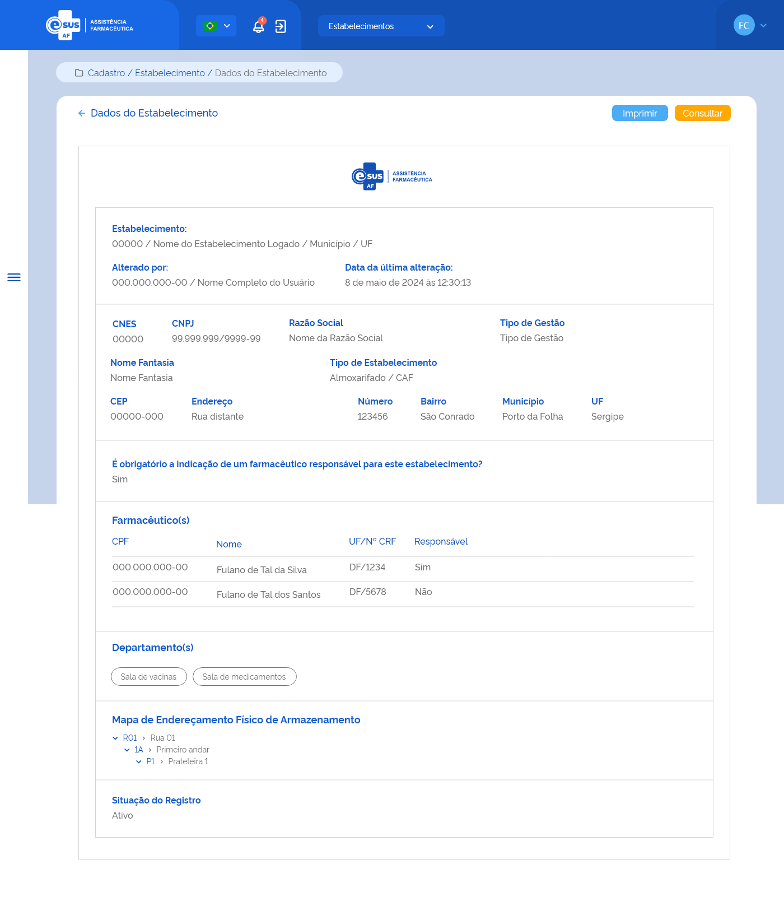

ETE015 - Detalhar Estabelecimento de Saúde
Descrição (modelo história de usuário)
Como usuário quero detalhar os dados de estabelecimento de saúde.
Protótipo 001

Link para protótipo no Adobe XD
Elementos de Tela
- Bread Crumb – “Cadastro / Estabelecimento / Dados do Estabelecimento”
- Título da página – “Detalhar Estabelecimento”
- “Seta” – M - retorna para a Tela de Consultar Estabelecimento (ETE012)
- “Imprimir” – BT
- “Consultar” – BT - retorna para a Tela de Consultar Estabelecimento (ETE012)
- Logotipo e-SUS AF - M
- Cabeçalho:
- Estabelecimento:
- CNES / Nome do estabelecimento logado / Município / UF
- Alterado por:
- CPF / Nome completo do usuário que realizou a última ação no cadastro da entrada (anonimizar os dados)
- Data e Hora da última alteração:
- Estabelecimento:
- CNES
- CNPJ
- Razão Social
- Tipo Gestão
- Nome Fantasia
- Tipo de Estabelecimento
- CEP
- Endereço
- Número
- Bairro
- Município
- UF
- É obrigatória a indicação de um farmacêutico responsável para este estabelecimento? - Sim ou Não
- Farmacêutico(s)
- CPF
- Nome
- UF/Nº CRF
- Responsável - Sim ou Não
- Departamento(s)
- Descrição departamento
- Mapa do Endereçamento Físico de Armazenamento
- Código > Descrição Endereço
- Situação do Registro
Critérios de Aceite
001
- O usuário somente poderá acessar a funcionalidade caso tenha permissão; RGN001
002
- O acesso à funcionalidade é dado através do menu lateral no item “Cadastro”, subitem “Estabelecimento”, na tela “Consultar Estabelecimento” quando for acionada a opção “Detalhar”;
003
- O sistema deve recuperar e apresentar os dados relacionados ao cadastro do estabelecimento de saúde que o usuário deseja detalhar;
004
- Os dados do CNES, Nome, Município e UF, do cabeçalho (Emitido por:), devem ser recuperados do cadastro do estabelecimento do usuário logado. Já o Nome e CPF do usuário responsável pela última alteração no registro do cadastro e a data dessa ação devem ser recuperados do histórico do registro da funcionalidade em questão; RGN014
005
- Quando o usuário acionar a opção de “Imprimir”, o sistema deve permitir imprimir as informações da tela ou salvá-las em um arquivo no formato desejado (padrão Windows);
006
- Quando o usuário acionar a opção de “Voltar” ou “Consultar”, o sistema finaliza o detalhamento e retorna à tela de consulta aos estabelecimentos de saúde.